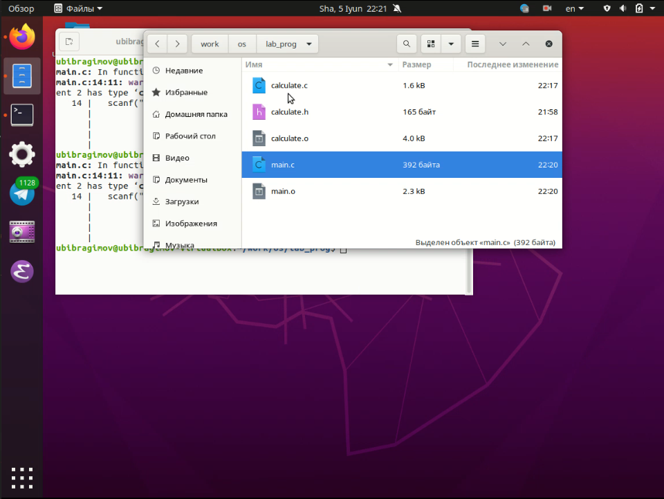
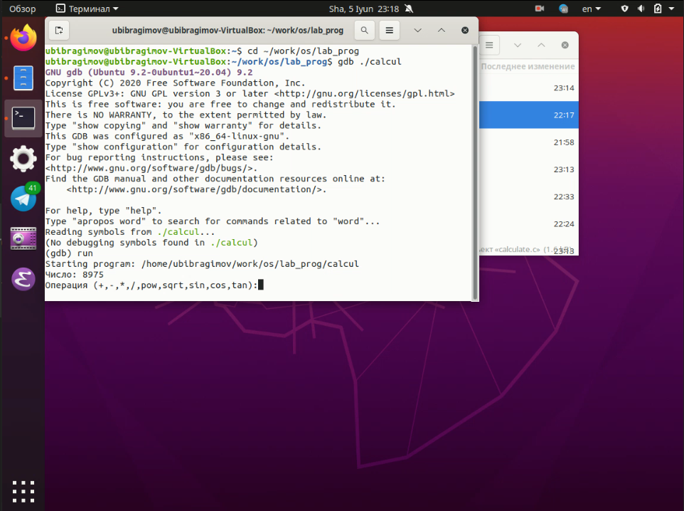
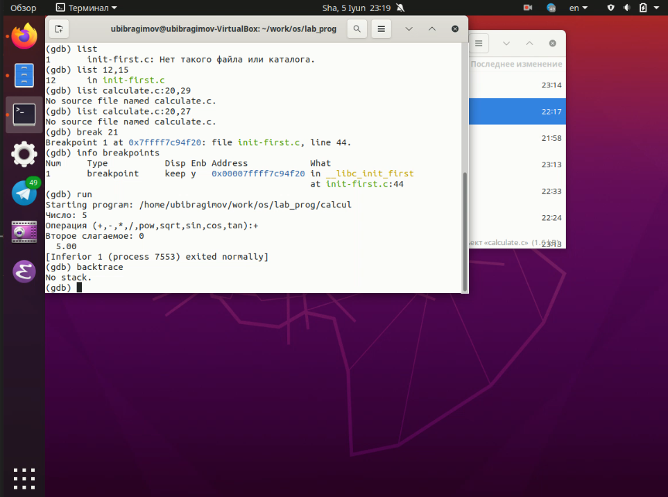
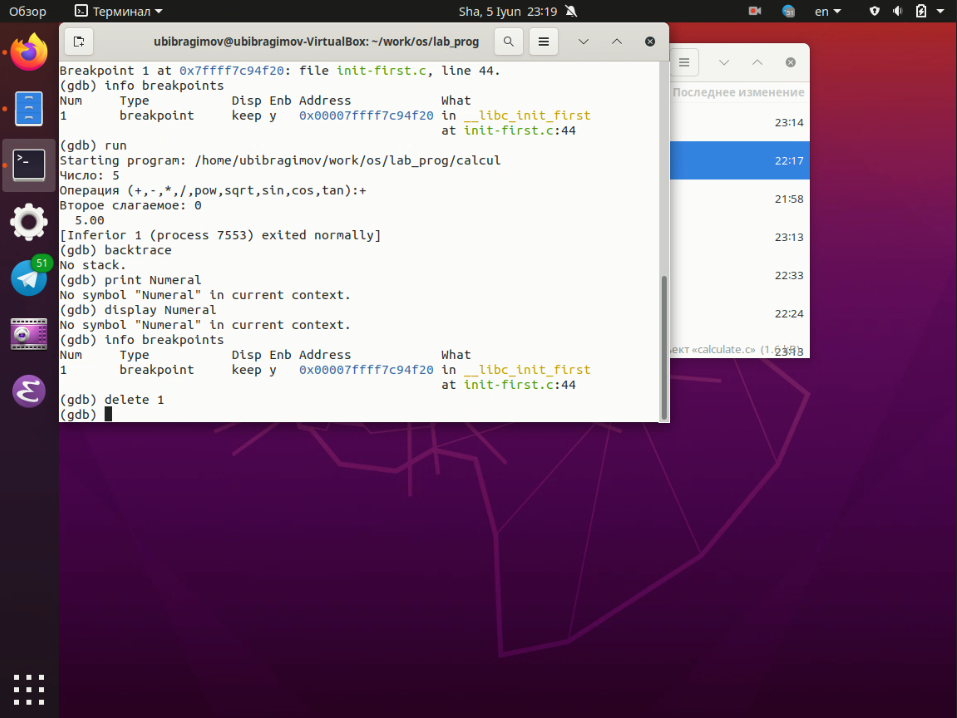
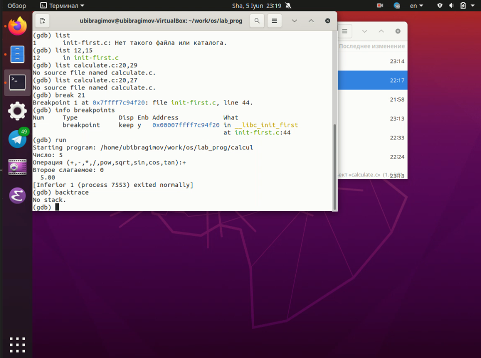
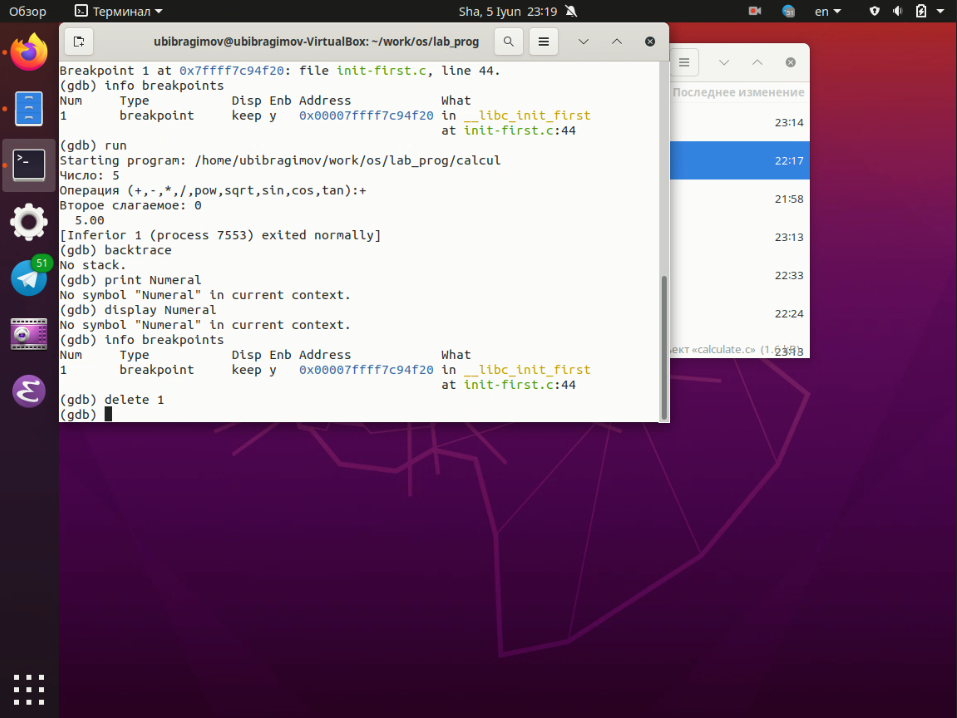
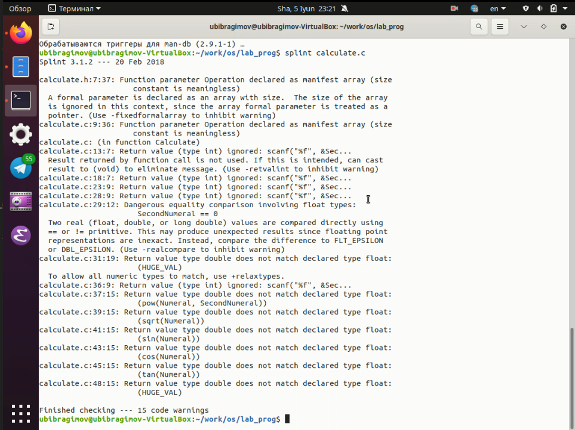

Отчёт по лабораторной работе №14 Ибрагимов Улугбек Ботырхонович
пПриобрести простейшие навыки разработки, анализа, тестирования и отладки приложений в ОС типа UNIX/Linux на примере создания на языке программирования C калькулятора с простейшими функциями.

gcc: gcc -c calculate.cgcc -c main.cgcc calculate.o main.o -o calcul -lmВ нём указаны :
%name%.o"calculate"clean, для быстрого удаления всех файлов в том числе и временных
gdb выполните отладку программы calcul (перед использованием gdb исправьте Makefile):

 



splint попробуйте проанализировать коды файлов calculate.c и main.c

В ходе выполнения Лабораторной работы №14, были приобретены навыки по разработке, анализу, тестированию и отладки приложений в Linux
man gcc, man make, man gdb ну или вместо утилиты man использовать команду --helpСоздание исходного кода (написание в IDE) -> Сохранение промежуточных файлов или альтернативных веток разработки исходного кода -> Компиляция исходных файлов или их интерпритация в зависимости от выбранного языка программирования и/или системы сборки проектов -> Тестирование проекта который был собран -> Запись в соответствующую ветку разработки Git (main или dev, по-умолчанию)make - предназначена для упрощения разработки приложений, путем написания файла конфигурации который описывает пути компиляции для компилятора языка программированияgdb:backtrace - вывод на экран путь к текущей точке останова.break - установить точку останова (строка или функция)clear - удалить все точки останова в функцииontinue - продолжить выполнение программыdelete (n) - удалить точку остановаdisplay - добавить выражение в список выражений, значения которых отображаются при достижении точки останова программыfinish - выполнить программу до момента выхода из функцииinfo breakpoints - вывести на экран список используемых точек остановаinfo watchpoints - вывести на экран список используемых контрольных выраженийlist - вывести на экран исходный код (в качестве параметра может быть указано название файла и через двоеточие номера начальной и конечной строк)next - выполнить программу пошагово, но без выполнения вызываемых в программе функцийprint - вывести значение указываемого в качестве параметра выраженияrun - запуск программы на выполнениеset[variable] - установить новое значение переменнойstep - пошаговое выполнение программыwatch - установить контрольное выражение, при изменении значения которого программа будет остановленаЗапустил Makefile -> Начал отладку (run) -> Вывел содержимое main файла -> Установил точку останова в main файле -> Продолжил выполнение (run) -> Использовал команды print & display для вывод промежуточных данных -> Удалил точку останова -> Закончил отладкуcppcheck, splint, cscope и другие